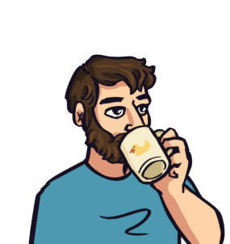

About Chris

Hi! I’m Chris, a programmer and teacher based in Copenhagen, DK.
I’ve been a C++ programmer for a while, but over the last 6 years or so I worked a lot in game development, touching almost everything that has to do with programming, but with a focus on engines and other low level systems.
Besides the corporate and startup stuff, I have a lot of personal projects. Most of them are private, but of the public ones:
- this is the student game I published a while ago
- this is the dry run project I build with the amazing people at Cooking with Golbins
- this is the slide deck of a presentation on simple math for Game Jammers at NGJ24
- these are some of my jam projects
- these are my posts
These days, I mostly focus on graphics programming while teaching C++ Game and Graphics programming at the MSc in Games Technologies at the IT University of Copenhagen.
Outside of work (and non programming-related hobbies. Or projects. Or jams. I spend too much time in front of the PC) I usually spend my time reading corny epic fantasy, playing TTRPG and going for long hikes.